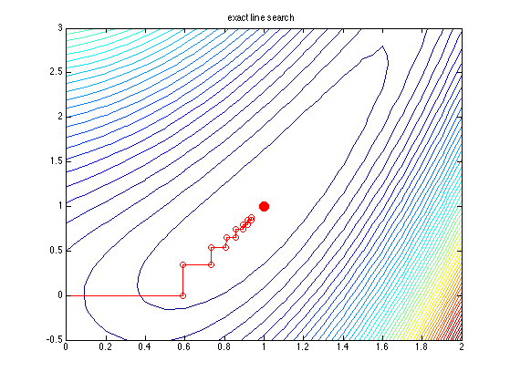
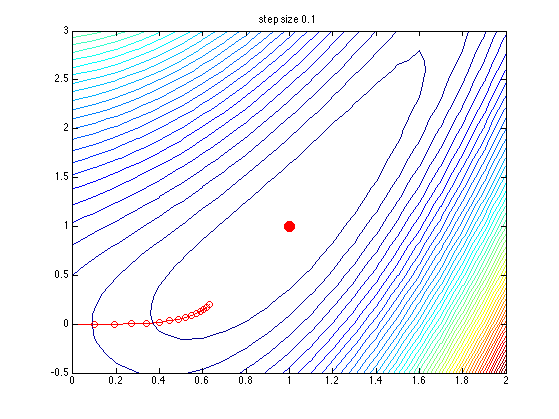
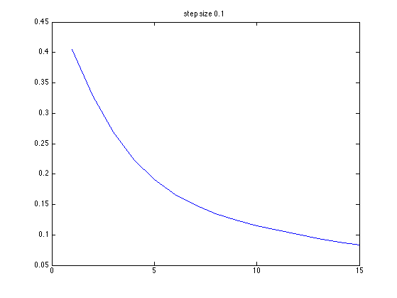
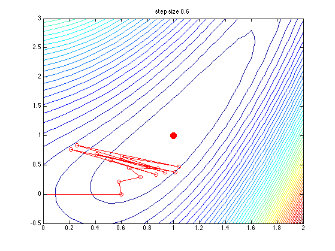
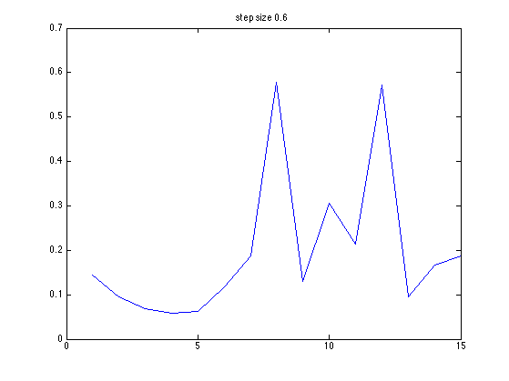
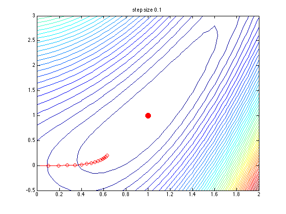
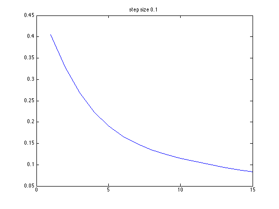
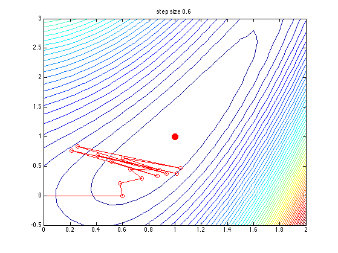
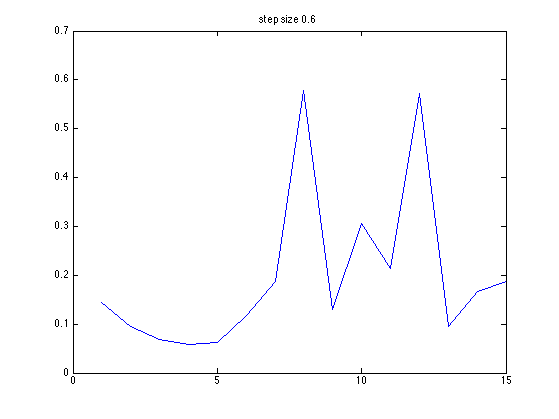

Visualize steepest descent optimization on a 2d function
We try fixed step size, and also line searching.
% This file is from pmtk3.googlecode.com fn = @(x) aokiFn(x); [x1 x2] = meshgrid(0:0.1:2, -0.5:0.1:3); Z = fn([x1(:), x2(:)]); Z = reshape(Z, size(x1)); stepSizes = { [], 0.1, 0.6 }; % [] means use line search for m=1:length(stepSizes) x0 = [0; 0]; global xhist fhist %updated by optimstore xhist = []; fhist = []; stepsize = stepSizes{m}; x = steepestDescent(fn, x0, 'maxIter', 15, ... 'stepSize', stepsize, 'outputFn', @optimstore); figure; contour(x1,x2,Z,50) hold on % Plot location of global min h=plot(1,1,'ro'); set(h,'markersize',10,'markerfacecolor','r'); % Plot trajectory plot(xhist(1,:), xhist(2,:), 'ro-'); if isempty(stepsize) ttl = sprintf('exact line search'); title(ttl); printPmtkFigure('steepestDescentDemoLS'); else ttl = sprintf('step size %2.1f', stepsize); title(ttl); printPmtkFigure(sprintf('steepestDescentDemo%2.1f', stepsize)); end figure; plot(fhist); title(ttl); end
    
   